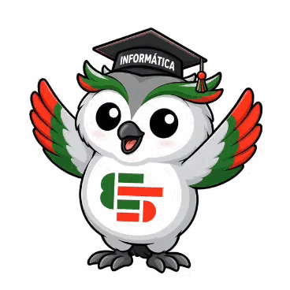

ACERCA DE LA ESPECIALIDAD:
La tecnicatura en Informática Profesional y Personal de la E.E.S.T. N°5 ofrece una formación de vanguardia centrada en el Desarrollo de Software Industrial, preparando a sus estudiantes para los desafíos del sector productivo local e internacional . A través de un enfoque práctico basado en el "aprender haciendo", el trayecto educativo integra lenguajes fundamentales como C++, Python y Java con el dominio de frameworks modernos como React y Node.js . Los futuros técnicos no solo desarrollan habilidades en programación avanzada y gestión de bases de datos, sino que también exploran las fronteras de la tecnología en áreas de Inteligencia Artificial, Big Data, Robótica e Internet de las Cosas (IoT) . Esta formación integral se complementa con una sólida base en sistemas operativos libres, seguridad digital e infraestructura de redes, garantizando un perfil versátil capaz de innovar y liderar procesos en el mundo digital actual
